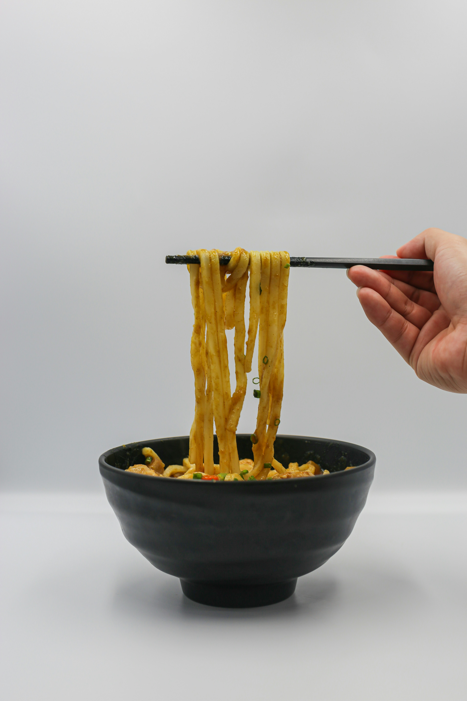

Crockpot Caesar Chicken Pasta

Description
I love a slow cooker pasta recipe and this crockpot
Caesar chicken pasta is a hearty, creamy pasta dish
that the whole family loves. Adding lemon zest really
brightens up the dish!
Ingredients
- 2 pounds boneless, skinless chicken breasts
- 1 teaspoon garlic powder
- 1 (32-ounce carton) reduced-sodium chicken broth
- 1 (16-ounce) bottle creamy Caesar salad dressing
- 1 pound dried rotini pasta
- 1 (8-ounce) package cream cheese, cubed and softened
- 1/2 cup freshly grated Parmesan cheese, divided
- 1/4 cup chopped fresh parsley
Steps
- Gather all ingredients.
- Lightly coat the bottom of a 5- to 6-quart slow cooker
with nonstick cooking spray. Place chicken breasts in a
single layer in the slow cooker and sprinkle with garlic
powder and lemon zest. Pour chicken broth and Caesar
dressing over the chicken.
- Cover and cook on Low for 5 hours or on High for 2 1/2
hours or until an instant read thermometer inserted into
the center of the chicken registers 165 degrees F
(74 degrees C).
- Remove chicken from the slow cooker and allow to cool
slightly on a cutting board before shredding or chopping
into bite-sized pieces.
- Meanwhile, stir the pasta into the dressing mixture in
the slow cooker. Cover and cook on High 20 to 30 minutes
more or until pasta is tender.
Home